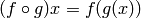

Funciones de orden superior¶

Las funciones de Haskell pueden tomar funciones como parámetros y devolver funciones como resultado. Una función que hace ambas cosas o alguna de ellas se llama función de orden superior. Las funciones de orden superior no son simplemente una parte más de Haskell, ellas mismas representan la experiencia de programar en Haskell. Aparecen cuando quieres definir cálculos definiendo cosas como son en lugar de definir los pasos de cambio de algún estado o algún bucle, las funciones de orden superior son indispensables. Son realmente una forma muy potente de resolver problemas y de pensar acerca de los programas.
Funciones currificadas¶
Oficialmente cada función de Haskell solo puede tomar un parámetro. Así que ¿Como es posible que hayamos definido y usado varias funciones que toman mas de un parámetro? Bueno ¡Es un buen truco! Todas las funciones que hemos usado hasta el momento y aceptaban más de un parámetro han sido funciones currificadas ¿Qué significa esto? Lo entenderás mejor con un ejemplo. Vamos a usar a nuestro buen amigo, la función max. Parece que toma dos parámetro y devuelve aquél que es mayor. Al aplicar max 4 5 primero se crea una función que toma un solo parámetro y devuelve 4 o el parámetro, dependiendo de cual sea mayor. Luego, 5 es aplicado a esa función y esta produce el resultado deseado. Esto suena un poco complicado pero en realidad es un concepto muy útil. Las siguientes dos llamadas son equivalentes:
ghci> max 4 5
5
ghci> (max 4) 5
5

El poner un espacio entre dos cosas es sencillamente aplicar una función. El espacio es una especie de operador y tiene el orden de preferencia mayor. Vamos a examinar el tipo de max. Es max :: (Ord a) => a -> a -> a. Esto también puede ser escrito como max :: (Ord a) => a -> (a -> a). Y también puede leerse como: max toma un a y devuelve (eso es ->) una función que toma un a y devuelve un a. Ese es el porqué el tipo devuelto y los parámetros de la función están separados solamente por flechas.
¿Y cómo nos beneficia esto? En pocas palabras, si llamamos a una función con demasiados pocos parámetros obtenemos una función parcialmente aplicada, es decir una función que toma tantos parámetros como le falte. Utilizar la aplicación parcial de funciones (o llamar a las funciones con menos parámetros) es una forma sencilla de crear funciones al vuelo de forma que podamos pasarlas como parámetros a otras funciones o dotarlas con algunos datos.
Échale un vistazo a esta función ofensivamente simple.
multThree :: (Num a) => a -> a -> a -> a
multThree x y z = x * y * z
¿Qué es lo que realmente pasa cuando realizamos multThree 3 5 9 o ((multThree 3) 5) 9? Primero, 3 es aplicado a multThree ya que está separado por un espacio. Esto crea una función que toma un parámetro y devuelve una función. Luego 5 es aplicado a está, de forma que se creará una función que toma un parámetro y lo multiplica por 15. 9 es aplicado a esa función y el resultado es 135 o algo similar. Recuerda que el tipo de esta función también podría escribirse como multThree :: (Num a) => a -> (a -> (a -> a)). Lo que está antes del -> es el parámetro que toma la función y lo que hay después es lo que devuelve. Así que nuestra función toma un a y devuelve una función con un tipo (Num a) => a -> (a -> a). De forma similar, esta función toma una a y devuelve una función del tipo (Num a) => a -> a. Y finalmente, esta función toma una a y devuelve una a. Mira esto:
ghci> let multTwoWithNine = multThree 9
ghci> multTwoWithNine 2 3
54
ghci> let multWithEighteen = multTwoWithNine 2
ghci> multWithEighteen 10
180
Al llamar a funciones con menos parámetros de los necesarios, hablando claro, creamos funciones al vuelo ¿Qué pasa si queremos crear una función que tome un número y lo compare con 100? Podríamos hacer algo como esto:
compareWithHundred :: (Num a, Ord a) => a -> Ordering
compareWithHundred x = compare 100 x
Si la llamamos con 99 nos devuelve GT. Bastante simple. Fíjate en la x del lado derecho de la ecuación. Ahora vamos a pensar que devuelve` `compare 100. Devuelve una función que toma un número y lo compara con 100. ¡Wau! ¿No es eso lo que buscábamos? Podemos reescribirlo como:
compareWithHundred :: (Num a, Ord a) => a -> Ordering
compareWithHundred = compare 100
La declaración de tipo permanece igual ya que compare 100 devuelve una función. compare tiene el tipo (Ord a) => a -> (a -> Ordering) y llamarla con 100 devuelve (Num a, Ord a) => a -> Ordering. La restricción de clase adicional se añade porque 100 es parte también de la clase de tipos Num.
Nota
¡Asegúrate de que realmente sabes como funcionan las funciones currificadas y la aplicación parcial de funciones ya que son muy importantes!
Las funciones infijas también pueden ser aplicadas parcialmente usando secciones. Para seccionar una función infija simplemente hay que rodearla con paréntesis y suministrar un solo parámetro en un lado. Esto crea una función que toma un parámetro y lo aplica en el lado que falta un operando. Una función extremadamente trivial sería:
divideByTen :: (Floating a) => a -> a
divideByTen = (/10)
Llamar a, digamos, divideByTen 200 es equivalente a hacer 200/10 o (/10) 200. Una función que comprueba si un carácter está en mayúsculas sería:
isUpperAlphanum :: Char -> Bool
isUpperAlphanum = (`elem` ['A'..'Z'])
Lo único especial de las secciones es el uso de -. Por definición, (-4) sería una función que toma un número y le restase 4. Sin embargo, por conveniencia, (-4) significa menos cuatro. Así que si quieres una función que reste 4 a un número puedes usar (subtract 4) o ((-) 4).
¿Qué pasa si intentamos hacer multThree 3 4``en GHCi en lugar de darle un nombre con un ``let o pasarlo a otra función?
ghci> multThree 3 4
<interactive>:1:0:
No instance for (Show (t -> t))
arising from a use of `print' at <interactive>:1:0-12
Possible fix: add an instance declaration for (Show (t -> t))
In the expression: print it
In a 'do' expression: print it
GHCi nos está diciendo que expresión producida es una función del tipo a -> a pero no sabe como mostrarlo por pantalla. Las funciones no son miembros de la clase de tipos Show, así que no podemos obtener una cadena con la representación de una función. Si hacemos algo como 1 + 1 en GHCi, primero calcula que eso es 2, y luego llama a show en 2 para tener una representación textual de ese número. Y una representación textual de 2 es simplemente "2", que es lo que obtenemos por pantalla.
Orden superior en su orden¶
Las funciones pueden tomar funciones como parámetros y también devolver funciones. Para ilustrar esto vamos a crear una función que tome una función y la aplique dos veces a algo.
applyTwice :: (a -> a) -> a -> a
applyTwice f x = f (f x)

Primero fíjate en su declaración de tipo. Antes, no necesitábamos usar paréntesis ya que -> es naturalmente asociativo por la derecha. Sin embargo, aquí está la excepción. Esto indica que el primer parámetro es una función que toma algo y devuelve algo del mismo tipo. El segundo parámetro es algo de ese mismo tipo y también devuelve algo de ese tipo. También podríamos leer esta declaración de tipo de forma currificada, pero para salvarnos de un buen dolor de cabeza diremos simplemente que esta función toma dos parámetros y devuelve una sola cosa. El primer parámetro es una función (del tipo a -> a) y el segundo es del mismo tipo a. La función puede ser del tipo Int -> Int o del tipo String -> String o cualquier otra cosa. Pero entonces, el segundo parámetro debe ser del mismo tipo.
Nota
De ahora en adelante diremos que una función toma varios parámetros en lugar de decir que en realidad una función toma un parámetro y devuleve una función parcialmente aplicada hasta que alcance una función que devuleva un valor sólido. Así que para simplificar diremos que a -> a -> a toma dos parámetros, incluso aunque nosotros sepamos lo que realmente está pasando.
El cuerpo de la función es muy simple. Usamos el parámetro f como una función, aplicando x a ella separándolas con un espacio y luego aplicando el resultado a f otra vez. De todas formas, juega un poco con la función:
ghci> applyTwice (+3) 10
16
ghci> applyTwice (++ " HAHA") "HEY"
"HEY HAHA HAHA"
ghci> applyTwice ("HAHA " ++) "HEY"
"HAHA HAHA HEY"
ghci> applyTwice (multThree 2 2) 9
144
ghci> applyTwice (3:) [1]
[3,3,1]
Lo increíble y útil de la aplicación parcial es evidente. Si nuestra función requiere que le pasemos una función que tome un solo parámetro, podemos simplemente aplicar parcialmente una función hasta el que tome un solo parámetro y luego pasarla.
Ahora vamos a usar la programación de orden superior para implementar una útil función que está en la librería estándar. Se llama zipWith. Toma una función y dos listas y las une aplicando la función entre los correspondientes parámetros. Aquí tienes como la implementaríamos:
zipWith’ :: (a -> b -> c) -> [a] -> [b] -> [c] zipWith’ _ [] _ = [] zipWith’ _ _ [] = [] zipWith’ f (x:xs) (y:ys) = f x y : zipWith’ f xs ys
Mira la declaración de tipo. El primer elemento es una función que toma dos cosas y produce una tercera. No tienen que ser del mismo tipo, aunque pueden serlo. El segundo y el tercer parámetro son listas. La primera tiene que ser una lista de a ya que la función de unión toma a como primer parámetro. La segunda es una lista de b. El resultado es una lista de c. Si la declaración de tipo de una función dice que acepta una función a -> b -> c como parámetro, también aceptará una función del tipo a -> a -> a. Recuerda que cuando estas creando una función, especialmente de orden superior, y no estas seguro de su tipo, simplemente puedes omitir la declaración de tipo y luego mirar el tipo que infiere Haskell usando :t.
La acción de la función es muy similar a la de zip. El caso base es el mismo, solo que hay un parámetro extra, la función de unión, pero este parámetro no tiene importancia en el caso base así que usamos _ con él. El cuerpo de la función para el último patrón es también muy similar al de zip, solo que no hace (x, y) sino f x y. Una sola función de orden superior puede ser utilizada para realizar una multitud de tareas diferentes si es suficientemente general. Aquí tienes una pequeña muestra de las cosas que puede hacer zipWith':
ghci> zipWith' (+) [4,2,5,6] [2,6,2,3]
[6,8,7,9]
ghci> zipWith' max [6,3,2,1] [7,3,1,5]
[7,3,2,5]
ghci> zipWith' (++) ["foo ", "bar ", "baz "] ["fighters", "hoppers", "aldrin"]
["foo fighters","bar hoppers","baz aldrin"]
ghci> zipWith' (*) (replicate 5 2) [1..]
[2,4,6,8,10]
ghci> zipWith' (zipWith' (*)) [[1,2,3],[3,5,6],[2,3,4]] [[3,2,2],[3,4,5],[5,4,3]]
[[3,4,6],[9,20,30],[10,12,12]]
Como puedes ver, una sola función de orden superior puede ser usada de forma muy versátil. Los lenguajes imperativos usan normalmente cosas como bucles while, estableciendo alguna variable, comprobando su estado, etc. para conseguir un comportamiento similar y luego envolverlo con una interfaz, una función. La programación funcional utiliza las funciones de orden superior para abstraer los patrones comunes, como examinar dos listas por pares y hacer algo con esos pares o tomar un conjunto de soluciones y eliminar aquellas que no necesites.
Vamos a implementar otra función que ya está en la librería estándar llamada flip. flip toma una función y devuelve una función que es como nuestra función original, solo que los dos primeros parámetros están intercambiados. Podemos implementarla así:
flip' :: (a -> b -> c) -> (b -> a -> c)
flip' f = g
where g x y = f y x
Aquí, nos aprovechamos del hecho de que las funciones estén currificadas. Cuando llamamos a flip' sin los parámetros x e y, devolverá una función que tome esos parámetros pero los llamará al revés. Incluso aunque las funciones a las que se les ha aplicado flip son normalmente pasadas a otras funciones, podemos tomar ventaja de la currificación cuando creemos funciones de orden superior pensando de antemano y escribir su resultado final como si fuesen llamadas totalmente aplicadas.
ghci> flip' zip [1,2,3,4,5] "hello"
[('h',1),('e',2),('l',3),('l',4),('o',5)]
ghci> zipWith (flip' div) [2,2..] [10,8,6,4,2]
[5,4,3,2,1]
Asociaciones y filtros¶
map toma una función y una lista y aplica esa función a cada elemento de esa lista, produciendo una nueva lista. Vamos a ver su definición de tipo y como se define.
map :: (a -> b) -> [a] -> [b]
map _ [] = []
map f (x:xs) = f x : map f xs
La definición de tipo dice que toma una función y que a su vez esta toma un a y devuelve un b, una lista de a y devuelve una lista de b. Es interesante que simplemente mirando la definición de tipo de una función, a veces podemos decir que hace la función. map es una de esas funciones de orden superior que son realmente versátiles y que pueden ser usadas de millones formas diferentes. Aquí lo tienes en acción:
ghci> map (+3) [1,5,3,1,6]
[4,8,6,4,9]
ghci> map (++ "!") ["BIFF", "BANG", "POW"]
["BIFF!","BANG!","POW!"]
ghci> map (replicate 3) [3..6]
[[3,3,3],[4,4,4],[5,5,5],[6,6,6]]
ghci> map (map (^2)) [[1,2],[3,4,5,6],[7,8]]
[[1,4],[9,16,25,36],[49,64]]
ghci> map fst [(1,2),(3,5),(6,3),(2,6),(2,5)]
[1,3,6,2,2]
Probablemente te hayas dado cuenta de cada una de estas sentencias se puede conseguir usando listas por comprensión. map (+3) [1,5,3,1,6] es lo mismo que escribir [x+3 | x <- [1,5,3,1,6]]. Sin embargo usar map es mucho más legible cuando solo tienes que aplicar una función a los elementos de una lista, especialmente cuando estas tratando con mapeados de mapeados de modo que se llena todo con un montón de corchetes y termine todo siendo un lío.
filter es una función que toma un predicado (un predicado es una función que dice si algo es cierto o falso, o en nuestro caso, una función que devuelve un valor booleano) y una lista y devuelve una lista con los elementos que satisfacen el predicado. La declaración de tipo y la implementación serían algo como:
filter :: (a -> Bool) -> [a] -> [a]
filter _ [] = []
filter p (x:xs)
| p x = x : filter p xs
| otherwise = filter p xs
Bastante simple. Si p x se evalúa a True entonces el elemento es incluido en la nueva lista. Si no, se queda fuera. Algunos ejemplos:
ghci> filter (>3) [1,5,3,2,1,6,4,3,2,1]
[5,6,4]
ghci> filter (==3) [1,2,3,4,5]
[3]
ghci> filter even [1..10]
[2,4,6,8,10]
ghci> let notNull x = not (null x) in filter notNull [[1,2,3],[],[3,4,5],[2,2],[],[],[]]
[[1,2,3],[3,4,5],[2,2]]
ghci> filter (`elem` ['a'..'z']) "u LaUgH aT mE BeCaUsE I aM diFfeRent"
"uagameasadifeent"
ghci> filter (`elem` ['A'..'Z']) "i lauGh At You BecAuse u r aLL the Same"
"GAYBALLS"
Todo esto podría haberse logrado también con listas por comprensión que usaran predicados. No hay ninguna regla que diga cuando usar map o filter en lugar de listas por comprensión, simplemente debes decidir que es más legible dependiendo del contexto. El filtro equivalente de aplicar varios predicados en una lista por comprensión es el mismo que aplicar varios filtrados o unir los predicados usando la función lógica &&.
¿Recuerdas nuestra función quicksort del capítulo anterior? Usamos listas por comprensión para filtrar los elementos que eran menores o iguales y mayores que el pivote. Podemos conseguir lo mismo de forma más legible usando filter.
quicksort :: (Ord a) => [a] -> [a]
quicksort [] = []
quicksort (x:xs) =
let smallerSorted = quicksort (filter (<=x) xs)
biggerSorted = quicksort (filter (>x) xs)
in smallerSorted ++ [x] ++ biggerSorted

Mapear y filtrar son el pan de cada día de todas las herramientas de un programador funcional. No importa si utilizas las funciones map y filter o listas por comprensión. Recuerda como resolvimos el problema de encontrar triángulos rectos con una determinada circunferencia. En programación imperativa, deberíamos haber solucionado el problema anidando tres bucles y luego comprobar si la combinación actual satisface las propiedades de un triángulo recto. En ese caso, lo habríamos mostrado por pantalla o algo parecido. Con la programación funcional este patrón se consigue con el mapeado y filtrado. Creas una función que tome un valor y produzca un resultado. Mapeamos esa función sobre todos los elementos de la lista y luego filtramos la lista resultante para que satisfaga nuestra búsqueda. Gracias a la evaluación perezosa de Haskell, incluso si mapeas algo sobre una lista varias veces o la filtras varias veces, solo se recorrerá la lista una vez.
Vamos a buscar el número más grande por debajo de 100.000 que sea divisible por 3829. Para lograrlo, simplemente filtramos un conjunto de posibilidades en el cual sabemos que está la solución.
largestDivisible :: (Integral a) => a
largestDivisible = head (filter p [100000,99999..])
where p x = x `mod` 3829 == 0
Primero creamos una lista de números menores que 100.000 de forma descendiente. Luego la filtramos con nuestro predicado y como los número están ordenados de forma descendiente, el número más grande que satisface nuestro predicado es el primer elemento de la lista filtrada. Ni siquiera tenemos que usar una lista finita para nuestro conjunto de partida. La evaluación perezosa aparece otra vez. Como al final solo acabamos usando la cabeza de la lista, no importa si la lista es finita o infinita. La evaluación se para cuando se encuentre la primera solución adecuada.
A continuación, vamos a buscar la suma de todos los cuadrados impares que son menores de 10.000. Pero primero, como vamos a usarla en nuestra solución, vamos a introducir la función takeWhile. Toma un predicado y una lista y recorre la lista desde el principio y devuelve estos elementos mientras el predicado se mantenga cierto. Una vez encuentre un predicado que no se evalúe a cierto para. Si queremos obtener la primera palabra de "Los elefantes saben como montar una fiesta", podríamos hacer takeWhile (/=' ') "Los elefantes saben como montar una fiesta" y obtendríamos "Los". Vale, ahora a por la suma de todos los cuadrados impares menores que 10.000. Primero empezaremos mapeado la función (^2) a la lista infinita [1..]. Luego filtramos la lista para quedarnos solo con los impares. Después tomamos los elementos mientras sean menores que 10.000. Finalmente, obtenemos la suma de todos estos elementos. Ni siquiera tenemos que crear una función para obtener el resultado, podemos hacerlo en una línea en GHCi:
ghci> sum (takeWhile (<10000) (filter odd (map (^2) [1..])))
166650
¡Impresionante! Empezamos con algunos datos iniciales (la lista infinita de los números naturales) que mapeamos, los filtramos y luego recortamos hasta que encajen con nuestras necesidades para luego sumarlos. También podríamos haber escrito esto usando listas por comprensión.
ghci> sum (takeWhile (<10000) [n^2 | n <- [1..], odd (n^2)])
166650
Es una cuestión de gustos. De nuevo, la característica evaluación perezosa de Haskell es lo que hace esto posible. Podemos mapear y filtrar una lista infinita ya que en realidad ni la mapeará ni la filtrará hasta el final, retrasará dichas acciones. Solo cuando forzamos a Haskell a que nos muestre la suma realiza la suma de que dice a takeWhile que necesita esos números. takeWhile fuerza el mapeado y el filtrado, pero solo hasta que encuentre un número mayor o igual que 10.000.
En nuestro siguiente problema vamos tratar con las secuencias de Collatz. Tomamos un número natural. Si ese número es par lo dividimos por dos. Si es impar, lo multiplicamos por tres y le sumamos uno. Tomamos el número resultante y le aplicamos lo mismo, lo que produce un nuevo número y así sucesivamente. Resumiendo, obtenemos una secuencia de números. Se sabe que para todo número la secuencia termina con el uno. Así que empezamos con el número 13, obtenemos esta secuencia: 13, 40, 20, 10, 5, 16, 8, 4, 2, 1. 13 * 3 + 1 es igual a 40. 40 dividido por dos es 20, etc. Podemos ver que la secuencia tiene 10 términos. Ahora, lo que queremos saber es: para cada número entre el 1 y el 100 ¿Cuántas secuencias tienen una longitud mayor que 15? Antes de nada creamos una función que produzca una secuencia:
chain :: (Integral a) => a -> [a]
chain 1 = [1]
chain n
| even n = n:chain (n `div` 2)
| odd n = n:chain (n*3 + 1)
Como la secuencia termina en 1, ese es el caso base. Es una función típica recursiva.
ghci> chain 10
[10,5,16,8,4,2,1]
ghci> chain 1
[1]
ghci> chain 30
[30,15,46,23,70,35,106,53,160,80,40,20,10,5,16,8,4,2,1]
¡Bien! Parece que funciona correctamente. Y ahora, la función que nos da la respuesta a nuestro problema:
numLongChains :: Int
numLongChains = length (filter isLong (map chain [1..100]))
where isLong xs = length xs > 15
Mapeamos con la función chain la lista [1..100] para obtener la lista de las secuencias. Luego filtramos la lista con un predicado que simplemente nos dice si una lista tiene un tamaño mayor que 15. Una vez hemos realizado el filtrado, vemos cuantas secuencias han quedado en la lista resultante.
Nota
Esta función tiene el tipo numLongChains :: Int porque length devuelve el tipo Int en lugar de un Num por razones históricas.
También podemos hacer cosas como map (*) [0..], con el único motivo de ilustrar como funciona la currificación y como la funciones (parcialmente aplicadas) son valores reales que pueden ser pasadas como parámetros en otras funciones o como pueden ser incluidas en listas (solo que no puedes mostrarlas por pantalla). Hasta ahora solo hemos mapeado sobre listas funciones que toman un solo parámetro, como map (*2) [0..] para obtener una lista del tipo (Num a) => [a], pero también podemos usar map (*) [0..] sin ningún problema. Lo que sucede es que cada número de la lista es aplicado a * que tiene el tipo (Num a) => a -> a -> a. Aplicar un solo parámetro a una función que tiene dos parámetros obtenemos una función que solo toma un parámetro, así que tendríamos una lista de funciones (Num a) => [a -> a]. map (*) [0..] `` produce una lista que podríamos escribir como ``[(0*),(1*),(2*),(3*),(4*),(5*)...
ghci> let listOfFuns = map (*) [0..]
ghci> (listOfFuns !! 4) 5
20
Al obtener el 4º elemento de nuestra lista obtenemos una función equivalente a (4*). Y luego aplicamos 5 a esa función. Así que en realidad es como si escribiéramos (4*) 5 o simplemente 4 * 5.
Lambdas¶

Las lambdas son funciones anónimas que suelen ser usadas cuando necesitamos una función una sola vez. Normalmente creamos funciones lambda con el único propósito de pasarlas a funciones de orden superior. Para crear una lambda escribimos un \ (Porque tiene un cierto parecido con la letra griega lambda si le echas mucha imaginación) y luego los parámetros separados por espacios. Luego escribimos una -> y luego el cuerpo de la función. Normalmente las envolvemos con paréntesis ya que de otra forma se extenderían al resto de la línea.
Si miras 10 cm arriba verás que usamos una sección where en nuestra función numLongChains para crear la función isLong con el único propósito de usarla en un filtro. Bien, en lugar de hacer eso podemos usar una lambda:
numLongChains :: Int
numLongChains = length (filter (\xs -> length xs > 15) (map chain [1..100]))
Las lambdas son expresiones, ese es el porqué podemos simplemente pasarlas así. La expresión (\xs -> length xs > 15) devuelve una función que nos dice si el tamaño de una lista es mayor que 15.

Es muy común que la gente que no está muy acostumbrada a como funciona la currificación y la aplicación parcial usen lambdas cuando no deben. Por ejemplo, la expresión map (+3) [1,6,3,2] y map (\x -> x + 3) [1,6,3,2] son equivalentes ya que ambas expresiones, (+3) y (\x -> x + 3) son funciones que toman un número y le suman 3. Nada más que decir, crear una lambda en este caso es algo estúpido ya que la aplicación parcial es mucho más legible.
Al igual que las funciones normales, las lambdas pueden tomar cualquier número de parámetros.
ghci> zipWith (\a b -> (a * 30 + 3) / b) [5,4,3,2,1] [1,2,3,4,5]
[153.0,61.5,31.0,15.75,6.6]
Y al igual que la funciones normales, las lambdas pueden usar el ajuste de patrones. La única diferencia es que no puedes definir varios patrones para un parámetro, como crear [] y (x:xs) para el mismo parámetro de forma que las variables se ajusten a uno u a otro. Si el ajuste de patrones falla en una lambda, se lanzará un error de ejecución, así que ten cuidado cuando los uses.
ghci> map (\(a,b) -> a + b) [(1,2),(3,5),(6,3),(2,6),(2,5)]
[3,8,9,8,7]
Normalmente rodeamos las lambdas con paréntesis a no ser que queramos que se extiendan hasta el final de la línea. Aquí tienes algo interesante, debido a que las funciones se currifican por defecto, estas dos definiciones son iguales:
addThree :: (Num a) => a -> a -> a -> a
addThree x y z = x + y + z
addThree :: (Num a) => a -> a -> a -> a
addThree = \x -> \y -> \z -> x + y + z
Si definimos funciones de esta forma es obvio el motivo por el cual las definiciones de tipo son como son. Hay tres -> tanto en la declaración de tipo como en la ecuación. Pero por supuesto, la primera forma de escribir funciones es mucho más legible, y la segundo sirve únicamente para ilustrar la currificación.
Sin embargo hay veces que es más interesante usar esta notación. Creo que la función flip es mucho más legible si la definimos así:
flip' :: (a -> b -> c) -> b -> a -> c
flip' f = \x y -> f y x
Aunque es lo mismo que escribir flip' f x y = f y x, hacemos obvio que la mayor parte del tipo la usaremos para producir una nueva función. El caso de uso más común de flip es llamarla con solo la función parámetro y luego pasar la función resultante como parámetro a map``o ``filter. Así que usa las lambdas cuando quieras hacer explícito que tu función esta principalmente pensada para se parcialmente aplicada y se pasada como a una función como parámetro.
Pliegues y papiroflexia¶

Volviendo a cuando tratábamos con la recursión, nos dimos cuenta de que muchas funciones operaban con listas. Solíamos tener un caso base que era la lista vacía. Debíamos usar un patrón x:xs y hacíamos alguna operación con un solo elemento de la lista. Esto sugiere que es un patrón muy común, así que unas cuantas funciones muy útiles fueron creadas para encapsular este comportamiento. Estas funciones son llamadas pliegues (o folds en ingles). Son una especie de función map, solo que reducen la lista a un solo valor.
Un pliegue toma una función binaria, un valor inicial (a mi me gusta llamarlo el acumulador) y una lista que plegar. La función binaria toma dos parámetros por si misma. La función binaria es llamada con el acumulador y el primer (o último) elemento y produce un nuevo acumulador. Luego, la función binaria se vuelve a llamar junto al nuevo acumulador y al nuevo primer (o último) elemento de la lista, y así sucesivamente. Cuando se ha recorrido la lista completa, solo permanece un acumulador, que es el valor al que se ha reducido la lista.
Primero vamos a ver la función foldl, también llamada pliegue por la izquierda. Esta pliega la lista empezando desde la izquierda. La función binaria es aplicada junto a el valor inicial y la cabeza de la lista. Esto produce un nuevo acumulador y la función binaria es vuelta a llamar con ese nuevo valor y el siguiente elemento, etc.
Vamos a volver a implementar sum, solo que esta vez, vamos a usar un pliegue en lugar de una recursión explícita.
sum' :: (Num a) => [a] -> a
sum' xs = foldl (\acc x -> acc + x) 0 xs
Probando, un, dos, tres:
ghci> sum' [3,5,2,1]
11

Vamos a dar un vistazo a como funciona este pliegue. \acc x -> acc + x es la función binaria. 0 es el valor inicial y xs es la lista que debe ser plegada. Primero, 0 se utiliza como el parámetro acc en la función binaria y 3 es utilizado como el parámetro x (o el valor actual).` `0 + 3 produce un 3 que pasa a ser el nuevo acumulador. Luego, 3 es usado como acumulador y 5 como el elemento actual y por tanto 8 se convierte en el nuevo acumulador. Seguimos adelante y 8 es el acumulador, 2 el elemento actual, así que el nuevo acumulador es 10. Para terminar ese 10 es usado como acumulador y 1 como el elemento actual, produciendo un 1. ¡Enhorabuena, has hecho un pliegue!
A la izquierda tienes un diagrama profesional que ilustra como funciona un pliegue paso a paso. Los números verdes (si los ves amarillos quizás seas daltónico) son los acumuladores. Puedes ver como la lista es consumida por el acumulador de arriba a abajo. Ñam, ñam, ñam... Si tenemos en cuenta que las funciones están currificadas, podemos escribir esta implementación de forma más bonita como:
sum' :: (Num a) => [a] -> a
sum' = foldl (+) 0
La función lambda (\acc x -> acc + x) es lo mismo que (+). Podemos omitir el parámetro xs ya que al llamar a foldl (+) 0 nos devuelve una función que toma una lista. Generalmente, si tienes una función del tipo foo a = bar b a la puedes escribir como foo = bar b gracias a la currificación.
Vamos a implementar otra función con un pliegue por la izquierda antes de continuar con los pliegues por la derecha. Estoy seguro de que sabes que elem comprueba si un elemento es parte de una lista así que no lo explicaré de nuevo (mmm... creo que ya lo hice). Vamos a implementarla.
elem' :: (Eq a) => a -> [a] -> Bool
elem' y ys = foldl (\acc x -> if x == y then True else acc) False ys
Bueno, bueno, bueno... ¿Qué estamos haciendo aquí? El valor de inicio y el acumulador son ambos del tipo booleano. Cuando hablamos de pliegues tanto e tipo del acumulador y el tipo del resultado final son el mismo. Empezamos con el valor inicial False. Tiene sentido ya que asumimos que el elemento no está en la lista. También porque si llamamos a un pliegue con una lista vacía el resultado será simplemente el valor inicial. Luego comprobamos si el elemento actual es el que estamos buscando. Si lo es, ponemos el acumulador a True. Si no lo es, dejamos el acumulador como estaba. Si ya estaba a False, permanece en ese estado ya que el elemento actual no es el que buscamos. Si era True, se queda como estaba también.
Ahora los pliegues por la derecha funcionan igual que los pliegues por la izquierda, solo que el acumulador consume elemento por la derecha. La función binaria de los pliegues por la izquierda como primer parámetro el acumulador y el valor actual como segundo parámetro (tal que así: \acc x -> ...), la función binaria de los pliegues por la derecha tiene el valor actual como primer parámetro y el acumulador después (así: \x acc -> ...). Tiene sentido ya que el pliegue por la derecha tiene el acumulador a la derecha.
El acumulador (y por tanto del resultado) de un pliegue puede ser de cualquier tipo. Puede ser un número, un booleano e incluso una nueva lista. Vamos a implementar la función map con un pliegue por la derecha. El acumulador será una lista, en la que iremos acumulando los elemento de la lista ya mapeados. Es obvio que el valor inicial será una lista vacía.
map' :: (a -> b) -> [a] -> [b]
map' f xs = foldr (\x acc -> f x : acc) [] xs
Si estamos mapeando (+3) a [1,2,3], recorremos la lista desde el lado derecho. Tomamos el último elemento, el cual es 3 y le aplicamos la función a él, de forma que acaba siendo un 6. Luego lo añadimos al acumulador que es []. 6:[] es [6] que pasa a ser el nuevo acumulador. Aplicamos (+3) a 2 , que es 5 y es añadido (:) al acumulador, de forma que nos queda [5,6]. Hacemos lo mismo con el último elemento y acabamos obteniendo [4,5,6].
Por supuesto, también podríamos haber implementado esta función usando un pliegue por la izquierda. Sería algo como map' f xs = foldl (\acc x -> acc ++ [f x]) [] xs, pero la cuestión es que la función ++ es bastante menos eficiente que :, así que normalmente usamos pliegues por la derecha cuando construimos listas a partir de una lista.

Si pones del revés una lista, puedes hacer un pliegue por la derecha como si fuera un pliegue por la izquierda y viceversa. A veces ni siquiera tienes que hacerlo. La función sum por ejemplo puede ser implementada tanto con un pliegue por la izquierda como por la derecha. Una gran diferencia es que los pliegues por la derecha funcionan con listas infinitas, mientras que los pliegues por la izquierda no. Para aclarar las cosas, si tomas una lista infinita en algún lugar y le aplicas un pliegue por la derecha, en algún momento alcanzará el inicio de la lista. Si embargo, si tomas una lista infinita en algún punto y le aplicas un pliegue por la izquierda nunca alcanzará el final.
Los pliegues se pueden utilizar para implementar cualquier función que recorra una lista, elemento a elemento, y luego devuelvan un valor. Siempre que quieras recorrer una lista y devolver un valor, hay posibilidades de utilizar un pliegue. Esta es la razón por la que los pliegues, junto a los mapeos y los filtros, son unas de las funciones más útiles de la programación funcional.
Las funciones foldl1 y foldr1 son muy parecidas a foldl y foldr, solo que en lugar que no necesitas indicar un valor de inicio. Asumen que el primer (o el último) elemento de la lista es valor de inicio, luego empiezan a plegar la lista por el elemento siguiente. Esto me recuerda que la función sum puede ser implementada como: sum = foldl1 (+). Ya que estas funciones dependen de que la listas que van a plegar tengan al menos un elemento, pueden causar errores en tiempo de ejecución si son llamadas con listas vacías. Por otra parte, tanto foldl como foldr funcionan bien con listas vacías. Cuando hagas un pliegue piensa bien en como actuar ante una lista vacía. Si la función no tiene sentido al ser llamada con listas vacías probablemente puedas utilizar foldl1``y ``foldr1 para implementarla.
Con el único motivo de mostrarte lo potente que estas funciones son, vamos a implementar un puñado de funciones estándar usando pliegues:
maximum' :: (Ord a) => [a] -> a
maximum' = foldr1 (\x acc -> if x > acc then x else acc)
reverse' :: [a] -> [a]
reverse' = foldl (\acc x -> x : acc) []
product' :: (Num a) => [a] -> a
product' = foldr1 (*)
filter' :: (a -> Bool) -> [a] -> [a]
filter' p = foldr (\x acc -> if p x then x : acc else acc) []
head' :: [a] -> a
head' = foldr1 (\x _ -> x)
last' :: [a] -> a
last' = foldl1 (\_ x -> x)
head es mejor implementarla con ajuste de patrones, pero de esta forma puedes ver que incluso se puede implementar con pliegues. Nuestra función reverse' está bastante clara, creo. Tomamos como valor de inicio la lista vacía y luego recorremos la lista desde la izquierda y simplemente vamos añadiendo elementos a nuestro acumulador. Al final tenemos la lista al revés. \acc x -> x : acc se parece a la función : solo que los parámetros están al revés. Por esta razón también podíamos haber escrito esto: foldl (flip (:)) [].
Existe otra forma de representar los pliegues por la izquierda y por la derecha. Digamos que tenemos un pliegue por la derecha, una función f y un valor de inicio z. Si hacemos el pliegue sobre la lista [3,4,5,6], básicamente es como si hiciésemos f 3 (f 4 (f 5 (f 6 z))). f es llamada con el último elemento de la lista y el acumulador, ese valor es dado como acumulador de la siguiente llamada y así sucesivamente. Si tomamos + como f y un valor de inicio 0, tenemos 3 + (4 + (5 + (6 + 0))). Representado de forma prefija sería (+) 3 ((+) 4 ((+) 5 ((+) 6 0))). De forma similar si hacemos un pliegue por la izquierda, tomamos g como función binaria y z como acumulador, sería equivalente a hacer g (g (g (g z 3) 4) 5) 6. Si tomamos flip (:) como función binaria y [] como el acumulador (de forma que estamos poniendo al reverso la lista), entonces sería equivalente a flip (:) (flip (:) (flip (:) (flip (:) [] 3) 4) 5) 6. Y estoy casi seguro que si evalúas esta expresión obtendrás [6,5,4,3].
scanl y scanr son como foldl y foldr, solo que devuelven todos los acumuladores intermedios en forma de lista. Existen también scanl1 y scanr1, que son similares a foldl1 y foldr1.
ghci> scanl (+) 0 [3,5,2,1]
[0,3,8,10,11]
ghci> scanr (+) 0 [3,5,2,1]
[11,8,3,1,0]
ghci> scanl1 (\acc x -> if x > acc then x else acc) [3,4,5,3,7,9,2,1]
[3,4,5,5,7,9,9,9]
ghci> scanl (flip (:)) [] [3,2,1]
[[],[3],[2,3],[1,2,3]]
Cuando usamos scanl, el resultado final será el último elemento de la lista resultante mientras que con scanr estará al principio.
Estas funciones son utilizadas para monitorizar la progresión de una función que puede ser implementada con un pliegue. Vamos a contestar a la siguiente cuestión ¿Cuántos elemento toma la suma de todos las raíces de todos los números naturales exceder 1000? Para obtener las raíces de todos los número naturales simplemente hacemos map sqrt [1..]. Ahora, para obtener la suma podría utilizar un pliegue, pero como estamos interesados en la progresión de la suma, utilizaremos scanl. Cuando obtengamos la lista resultante, simplemente contamos cuantas sumas están por debajo de 1000. La primera suma de la lista será 1. La segunda será 1 más la raíz de 2. La tercera será lo mismo que la anterior más la raíz de 3. Si hay X sumas menores de 1000, entonces tomará X + 1 elementos para que la suma exceda 1000.
sqrtSums :: Int
sqrtSums = length (takeWhile (<1000) (scanl1 (+) (map sqrt [1..]))) + 1
ghci> sqrtSums
131
ghci> sum (map sqrt [1..131])
1005.0942035344083
ghci> sum (map sqrt [1..130])
993.6486803921487
Utilizamos takeWhile en lugar de filter porque éste no funciona con listas infinitas. Incluso aunque nosotros sepamos que la lista es ascendente, filter no lo sabe, así que usamos takeWhile para cortar la lista por la primera ocurrencia de una suma que supere 1000.
Aplicación de funciones con $¶
Esta bien, ahora vamos a ver la función $, también llamada aplicación de función. Antes de nada vamos a ver como está definida:
($) :: (a -> b) -> a -> b
f $ x = f x

¿Pero qué...? ¿Para qué queremos un operador tan inútil? ¡Es simplemente la aplicación de una función! Bueno, casi, pero no solo eso. Mientras que la aplicación de funciones normal (un espacio entre dos cosas) tiene un alto orden de precedencia, la función $ tiene el orden de precedencia más bajo. La aplicación de funciones con el espacio es asociativa a izquierdas (así que f a b c es lo mismo que ((f a) b) c), la aplicación de funciones con $ es asociativa a derechas.
Eso está muy bien, pero ¿De qué nos sirve esto? Básicamente es una función de conveniencia que utilizamos para no tener que escribir muchos paréntesis. Considera la expresión sum (map sqrt [1..130]). Gracias a que $ tiene un bajo orden de precedencia podemos escribir es misma expresión como sum $ map sqrt [1..130], ahorrándonos que nuestros dedos pulsen esas molestas teclas. Cuando se encuentra un $, la expresión a la derecha es aplicada como parámetro a la función de la izquierda. ¿Qué pasa con sqrt 3 + 4 + 9? Esta expresión suma 4 más 9 más la raíz de 3. Si lo que queremos es la raíz de 3 + 4 + 9 tenemos que escribir sqrt (3 + 4 + 9) o si usamos $ podemos escribirlo como sqrt $ 3 + 4 + 9 ya que $ tiene menor orden de precedencia que cualquier otro operador. Por este motivo podemos imaginar a $ como una especie de paréntesis abierto que de forma automática añade un cierre al final de la expresión.
¿Qué pasaría con sum (filter (> 10) (map (*2) [2..10]))? Bueno, como $ es asociativo por la derecha, f (g (z x)) sería igual que f $ g $ z x. Seguimos adelante y sum (filter (> 10) (map (*2) [2..10])) puede ser escrito como sum $ filter (> 10) $ map (*2) [2..10].
Pero aparte de eliminar los paréntesis, la existencia del operador $ también supone que podemos tratar la aplicación de funciones como una función más. De esta forma, podemos, por ejemplo, mapear una lista de funciones:
ghci> map ($ 3) [(4+), (10*), (^2), sqrt]
[7.0,30.0,9.0,1.7320508075688772]
Composición de funciones¶
En matemáticas la composición de funciones está definida como: , que significa que al componer dos funciones se crea una nueva que, cuando se llama con un parámetro, digamos x, es equivalente a llamar a g con x y luego llamar a f con el resultado anterior.
En Haskell la composición de funciones es prácticamente lo mismo. Realizamos la composición de funciones con la función ., que está definida como:
(.) :: (b -> c) -> (a -> b) -> a -> c
f . g = \x -> f (g x)

Fíjate en la declaración de tipo. f debe tener como parámetro un valor con el mismo tipo que el valor devuelto por g. Así que la función resultante toma un parámetro del mismo tipo que toma g y devuelve un valor del mismo tipo que devuelve f. La expresión negate . (-3) devuelve una función que toma un número, lo multiplica por tres y luego lo niega.
Uno de los usos de la composición de funciones es el de crear funciones al vuelo para ser pasadas a otras funciones. Claro, puedes usar lambdas pero muchas veces la composición de funciones es más clara y concisa. Digamos que tenemos una lista de números y queremos convertirlos todos en negativos. Una forma de hacerlo sería obteniendo primero el número absoluto y luego negándolo, algo así:
ghci> map (\x -> negate (abs x)) [5,-3,-6,7,-3,2,-19,24]
[-5,-3,-6,-7,-3,-2,-19,-24]
Fíjate que la función lambda se parece a la definición de composición de funciones. Usando la composición de funciones quedaría así:
ghci> map (negate . abs) [5,-3,-6,7,-3,2,-19,24]
[-5,-3,-6,-7,-3,-2,-19,-24]
¡Genial! La composición de funciones es asociativa a derechas, así que podemos componer varias funciones al mismo tiempo. La expresión f (g (z x)) es equivalente a (f . g . z) x. Teniendo esto en cuenta, podemos convertir:
ghci> map (\xs -> negate (sum (tail xs))) [[1..5],[3..6],[1..7]]
[-14,-15,-27]
En esto:
ghci> map (negate . sum . tail) [[1..5],[3..6],[1..7]]
[-14,-15,-27]
¿Y qué pasa con las funciones que toman varios parámetros? Bueno, si queremos usarlas en la composición de funciones, tenemos que aplicarlas parcialmente de forma que cada función tome un solo parámetro. sum (replicate 5` `(max 6.7 8.9)) se puede escribir como (sum . replicate 5 . max 6.7) 8.9 o como sum . replicate 5 . max 6.7 $ 8.9. Lo que sucede aquí es: se crea una función que toma max 6.7 y aplica replicate 5 a ella. Luego se crea otra función que toma el resultado de lo anterior y realiza una suma. Finalmente, la función anterior es llamada con 8.9. Normalmente se lee como: Aplica 8.9 a max 6.7, luego aplica replicate 5 y luego aplica sum al resultado anterior. Si quieres reescribir una expresión con un montón de paréntesis usando la composición de funciones, puedes empezar poniendo el último parámetro de la función más externa después de $ y luego empezar a componer todas las demás funciones, escribiéndolas sin el último parámetro y poniendo . entre ellas. Si tienes replicate 100 (product (map (*3) (zipWith max [1,2,3,4,5]` `[4,5,6,7,8]))) puedes escribirlo también como replicate 100 . product . map (*3) . zipWith max [1,2,3,4,5] $ [4,5,6,7,8]. Si una expresión termina con 3 paréntesis, existen posibilidades de escribir la misma expresión usando 3 composiciones de funciones.
Otro uso común de la composición de funciones es la definición de funciones en el llamado estilo libre de puntos. Echa un vistazo a esta función que escribimos anteriormente:
sum' :: (Num a) => [a] -> a
sum' xs = foldl (+) 0 xs
Nota
El término estilo libre de puntos (point-free style o pointless style en inglés) se originó en topología, una rama de las matemáticas que trabaja con espacios compuestos de puntos y funciones entre estos espacios. Así que una función en estilo libre de puntos es una función que no menciona explícitamente los puntos (valores) del espacio sobre los que actua. Este término puede confundir a la gente ya que normalmente el estilo libre de puntos implica utilizar el operador de composición de funciones, el cual se representa con un punto en Haskell.
xs está expuesta en ambos lados de la ecuación. Podemos eliminar xs de ambos lados gracias a la currificación, ya que foldl (+) 0 es una función que toma una lista. Escribir la función anterior como sum' = foldl (+) 0 se llama estilo libre de puntos. ¿Cómo escribimos esto en estilo libre de punto?
fn x = ceiling (negate (tan (cos (max 50 x))))
No podemos eliminar simplemente x de ambos lados. La x en el cuerpo de la función tiene un paréntesis después de ella. cos (max 50) no tiene mucho sentido. No puedes calcular el coseno de una función. Lo que hacemos es expresar fn como una composición de funciones.
fn = ceiling . negate . tan . cos . max 50
¡Excelente! Muchas veces una composición de funciones es mucho más concisa y legible, ya que te hace pensar en funciones y como se pasan los parámetros entre ellas en lugar de pensar en los datos y como estos son transformados. Puedes utilizar funciones simples con la composición de funciones para crear funciones mucho más complejas. Sin embargo, muchas veces, escribir una función en estilo libre de puntos pude ser menos legible si la función es muy compleja. Es por eso que se desaconseja el uso de la composición de funciones para cadenas de funciones muy largas. El estilo recomendable para estos casos es usar secciones let para dar nombres a resultados intermedios, dividiendo el problema en sub-problemas y luego realizar una composición con todo ellos de forma que si alguien lo lee le encuentre el sentido.
En la sección de mapeos y filtros, solventamos el problema de encontrar la suma de todos los cuadrados impares menores que 10.000. Aquí tienes como se vería la solución si la ponemos en una función:
oddSquareSum :: Integer
oddSquareSum = sum (takeWhile (<10000) (filter odd (map (^2) [1..])))
Siendo fan de la composición de funciones, probablemente podría haberla escrito como:
oddSquareSum :: Integer
oddSquareSum = sum . takeWhile (<10000) . filter odd . map (^2) $ [1..]
Sin embargo, si hay posibilidades de que alguien más lea este código, podría escribirlo como:
oddSquareSum :: Integer
oddSquareSum =
let oddSquares = filter odd $ map (^2) [1..]
belowLimit = takeWhile (<10000) oddSquares
in sum belowLimit
No ganaría ninguna competición de código corto, pero le facilitaría la vida a alguien que tuviera que leerlo.